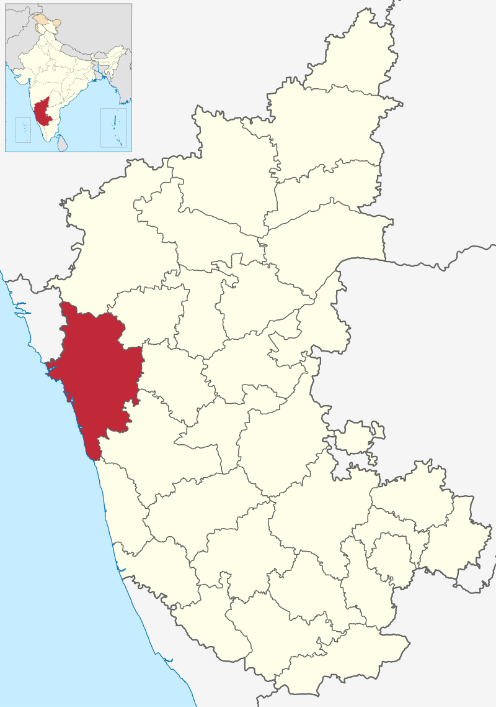

Uttara Kannada, formerly known as North Canara, is a district in the Indian state of Karnataka. It is bordered by the state of Goa and Belagavi District to the north, Dharwad District and Haveri District to the east, Shivamogga District, and Udupi District to the south, and the Arabian Sea to the west.
Karwar is the largest city in the district And Only Taluk in district which has Only Medical College in Entire District
Kumta, Bhatkal, Sirsi ,Yallapur and Dandeli are other major towns in the district. The district is known for a number of beaches and water falls. Eighty percent of Uttara Kannada's area consists of forest.
The district's agroclimatic divisions include the coastal plain (consisting of Karwar, Ankola, Kumta, Honnavar and Bhatkal taluks) and Malenadu (consisting of Sirsi, Siddapur, Yellapur, Haliyal, Joida, and Mundgod taluks).
History
The first known dynasty from Uttar Kannada District are Chutus of Banavasi. Uttara Kannada was the home of the Kadamba kingdom from the 350 to 525. They ruled from Banavasi. After the subjugation of the Kadambas by the Chalukyas, the district came under successive rule of empires like Chalukyas, Rashtrakutas, Hoysalas and Vijayanagar empire. Moroccan traveler Ibn Battuta is said to have stayed for a time in the district under the protection of Nawayath Sultan Jamal Al-Din at Hunnur.[2] This place is presently known as Hosapattana and is located in the town of Honnavar. Ruins of an old mosque and its minaret can still be seen in the village. The district came under the rule of Maratha Empire in the 1750s and later part of Mysore Kingdom, who ceded it to the British at the conclusion of the Fourth Mysore War in 1799. It was initially part of Kanara district in Madras Presidency. The district was divided to North and South Kanara districts in 1859. The British finally transferred Uttara Kannada district to Bombay Presidency in 1862.
After India's independence in 1947, Bombay Presidency was reconstituted as Bombay State. In 1956, the southern portion of Bombay State was added to Mysore State, which was renamed Karnataka in 1972. Significant and picturesque, the Sadashivgad fort of historical importance is now a tourist destination located by the Kali river bridge, which has been built at the confluence of the river and the Arabian Sea. The renowned Bengali poet and Nobel laureate Rabindranath Tagore, who visited Uttara Kannada in 1882, dedicated an entire chapter of his memoirs to this town. The 22-year-old Rabindranath Tagore stayed with his brother, Satyendranath Tagore, who was the district judge in Uttara Kannada. There is a substantial amount of Chardo families in this area as they had migrated due to the persecution of the Portuguese in Goa.Portuguese
Cintacora, also known as Chitrakul (Chittakula) and Sindpur, was known to the Portuguese as a very old port. When Sadashivgad was built in this area, the village also came to be known by that name. Pir fort, named for the Dargah of Shahkaramuddin, was captured and burnt by the Portuguese in 1510. The creek at the mouth of the Kali River was a trading center which came into greater prominence after Sadashivgad was built and the Portuguese realised the advantages of its sheltered harbour.British
In 1638, a rival English trading body, the Courteen Association, established a factory at Uttara Kannada (actually the village named Kadwad, situated 6 kilometres (3.7 mi) eastwards on the banks of the Kali river). It was a trade port frequented by traders from Arabia and Africa. Baitkhol port (the current civil port of Uttara Kannada) was known for its natural harbour. The name Baithkhol is Arabic term, Bait-e-kol, meaning bay of safety. Muslin was the chief commodity purchased but Uttara Kannada was also a source for pepper, cardamom, cassia and coarse blue cotton cloth. Situated on India's west coast, 50 miles south-east of Goa, Uttara Kannada was noted for its safe harbour. In 1649, the Courteen Association united with the British East India Company and Uttara Kannada became a company factory. North Kanara, 1896 Kingdom of Mysore In the Treaty of Mangalore signed in 1784, between Tipu Sultan and the East India Company, one finds reference to Uttara Kannada and Sadashivgad written as Karwar and Sadasewgude respectively.[4] Bhatkal and Honnavar were the chief ports of Tippu Sultan in the district.The British Empire
The British made Carwar the district headquarters of North Canara in 1862. Since 1862, the time from which it came under Bombay presidency, Uttara Kannada was described as a first rate harbour between Bombay and Colombo.Maratha Empire
It became a part of Maratha territory. It was a part of the Bombay Presidency until 1950.